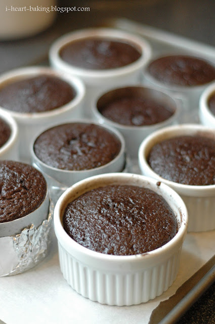

Lava cake

Best desert you can eat ever!
- INGREDIENTS
- ½ cup butter, cut into 8 pieces
- 6 ½ (1 ounce) squares semisweet chocolate, finely chopped
- 3 eggs, room temperature
- ¼ cup and 1 tablespoon and 1 teaspoons white sugar
- 1 tablespoon and 1 teaspoons unsweetened cocoa powder
- 2 tablespoons all-purpose flour
- 1 pinch salt
- Directions
- Preheat the oven to 400 degrees F (200 degrees C).
Grease and flour four 6-ounce ramekins.
- Place chocolate and butter in the top of a double boiler over simmering water.
Stir frequently, scraping down the sides with a rubber
spatula to avoid scorching, until chocolate is melted, about 5 minutes.
- Combine eggs and sugar in a large bowl; beat with an electric mixer
until pale and thick, about 5 minutes. Mix in melted chocolate,
cocoa powder, and flour until combined. Pour batter into the
prepared ramekins and place on a baking tray.
- Bake in the preheated oven until the sides are set but the middle is
still jiggly, 10 to 13 minutes. Let cool for 5 minutes before
serving.
Go Back